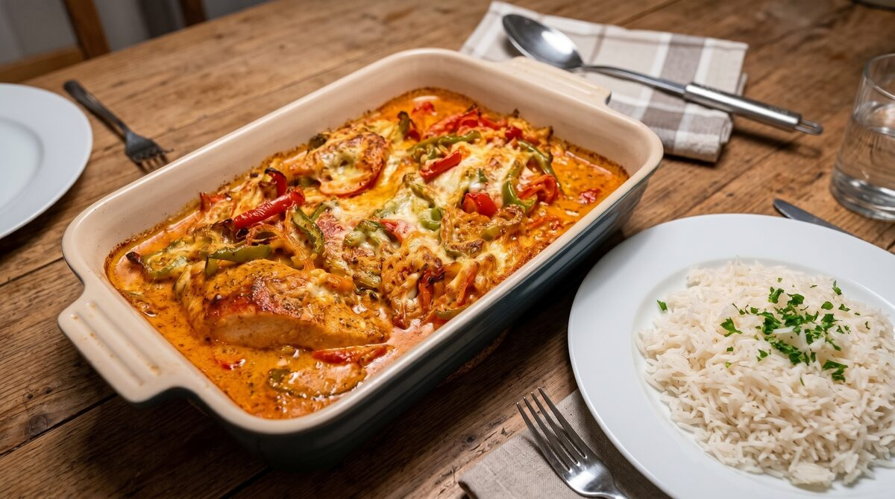

Paprika Cream Chickenbreast Recipe for the Oven

Home
Description:
Tasty and protein-rich chickenbreast with paprika and cream sauce.
For 4 servings.
Ingredients
- 4 chickenbreast fillets
- 2 red bell peppers
- 1 green bell pepper
- 1 onion
- 2 garlic cloves
- 1 dried chili pepper
- 1 cup heavy cream
- 1 cup sour cream
- 1 tsp tomato paste
- 125ml vegetable broth
- 1 tbsp sweet paprika
- 1 tsp hot paprika
- 100g grated cheese
- Oil for cooking
- Salt to taste
- Paprika to taste
Preparation
Total time: 1h | Prep time: 20min | Cooking/baking time: 40min |
- Preheat your oven to 180 °C (top/bottom heat).
- Wash and pat the chicken fillets dry with paper towels.
Season both sides with salt and sweet paprika, then place them closely side by side in a baking dish.
- Wash the bell peppers and remove the seeds.
Cut them into thin strips and spread them evenly over the chicken fillets.
- Cut the onion into half-rings and cook in a pan with a little vegetable oil until translucent.
Finely chop or crumble the chili, press the garlic cloves, and add both to the pan.
- Stir in the paprika and tomato paste, then add the vegetable broth to the pan and let it simmer briefly.
- Lower the heat, stir in the heavy cream and sour cream, and season with salt to taste.
- Pour the sauce evenly over the chicken and pepper strips so everything is well covered.
- Sprinkle the grated cheese on top.
- Bake uncovered on the middle rack for about 30 minutes, until the chicken is cooked through and the cheese is melted and golden brown.
Serving Suggestions
- Pasta: Serve alongside ribbon noodles (tagliatelle) to soak up the sauce.
- Rice: A side of steamed white rice pairs well with the creamy paprika flavor.